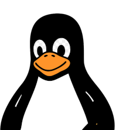

Linux Kernel Developer
Specialized in Linux Kernel development and platform enablement
for Linux enterprise distributions.
PHD thesis focuses on the
usage of NLP models for Linux Enterprise applications.

Linux systems engineer focused on kernel development, USB/TBT and other device drivers (memstick, extcon). Daily activies usually involve backporting, subsystem debugging, crash, perf, stack trace / vmcore analysis, performance optimization, and hardware enablement. Experienced in both upstream open-source collaboration and mostly in the development of downstream enterprise Linux distributions.
On top of that, I am also a really proud father of 2, a height challenged goalkeeper and a brazilian barbecue chef in training. I really enjoy all sort of gatherings, thus I am not only a promoter of office corporate technical events, but also of soccer matches of "The Injured" soccer team, as well as fun and interesting playdates, while not forgetting to promote worthy meat and vegetable offerings to the barbecues gods.
Presentation about Linux enterprise kernel development - 101 style - 2h30 hours (PORTUGUESE)
Also presented a first version of this talk at the FOSforums 2024 conference: FOSforums 2024
Personal project for my "Castomer" (RIP ♡)
Prototype of a mobile Android application applied to Industrial Plant OPC comunication and supervision (Portuguese) - Final project for my Industrial Automation Specialization degree